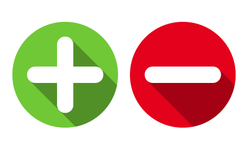
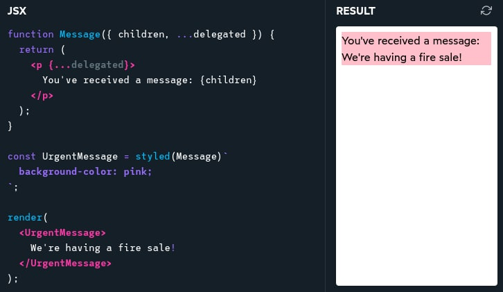
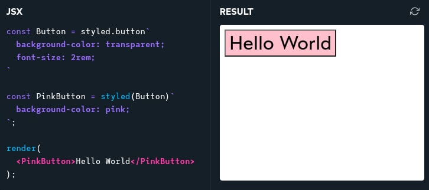

Styled Components
style your apps without stress
What problem does styled-components solve?
How do we structure large applications to avoid specificity wars and naming collisions?
How do we identify which styles affect a given element?
tools for managing CSS: pros and cons
Vanilla CSS
| + No tooling means less complexity | - Global and unscoped |
| + No runtime performance costs | - Can't easily share data between CSS and JS |
| - Requires that you remember to add vendor prefixes for many CSS properties |
Sass / Less
| + Includes powerful tools like for-loops, mixins, and nesting | - Inherits a lot of "cons" from vanilla CSS |
| + Has really high developer satisfaction compared with vanilla CSS | - Requires a build step |
Tailwind
| + Solves scoping and specificity | - Adds a lot of "bulk" to your markup. |
| + Includes built-in design tokens (colors, sizes…) | - Because not all CSS can be turned into utilities, you'll likely need a secondary system for writing more-traditional CSS |
| + Not React-specific | - Relatively steep learning curve, compared to other tools |
CSS Modules
| + Solves scoping and specificity! | - Doesn't really offer any modern convenience features, like autoprefixing |
| + Feels like writing straight-up CSS | - Hard to share data between CSS and JS |
| + Offers a composes feature, to extend existing CSS classes |
styled-components
| + Solves scoping and specificity in a magnificent way. | - Requires a build system |
| + Feels like writing CSS with some of the quality-of-life improvements from Sass/Less rolled in. | - It's primarily a React tool |
| + Offers good solutions for animations and global styles — you can write 100% of your CSS with this tool |
styled-components under the hood
Installation
Babel plugin
Implementation

Wrapping custom components

Composing styled-components

Global Styles
styled-components has a specific API for creating global styles:
Dynamic Styles
Inline styles:
Interpolation functions:
CSS Variables:
Media queries
When we extend the component mindset to our CSS, we gain all sorts of new superpowers:
- The ability to know, with confidence, whether it's safe to remove a CSS declaration (no possibility of it affecting some totally-separate part of the application!)
- A complete lack of specificity issues, no more trying to find tricks to bump up specificity
- A neat and trim mental model that fits in your head and helps you understand exactly what your pages will look like, without needing to do a bunch of manual testing.